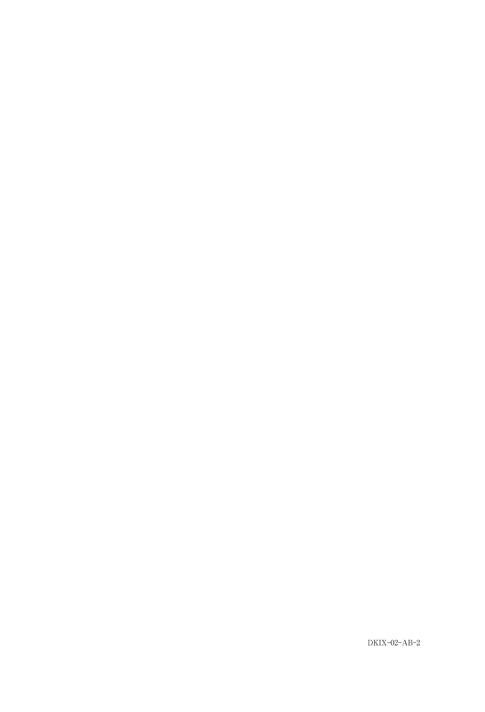
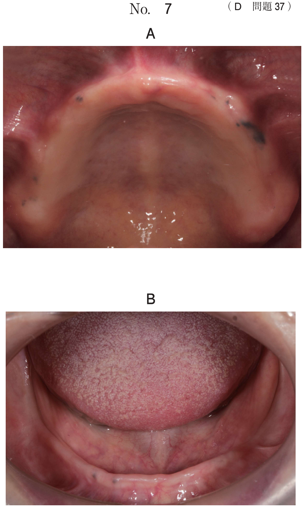

骨折：下顎骨骨折
下顎骨体部骨折
症状
- 咬合の異常（偏位）
- 開閉口時痛、顎運動障害
- 患側の下歯槽神経麻痺：下顎臼歯部（大臼歯部）の知覚麻痺
- 骨片呼吸：下顎正中部に特徴的
- 軋轢音、咀嚼・構音障害
- マルゲーニュ（Malgaigne）圧痛：骨折線に一致した部位の圧痛
- 開口障害：口を大きく開口できない状態（少しは口が開く）
- 牙関緊急：破傷風やてんかんなどによる強直性けいれんに伴う開口不能（まったく口が開かない状態）
骨片の偏位と筋の牽引方向 ★頻出
| 骨折部位 | 小骨片の偏位 | 大骨片の偏位 |
|---|---|---|
| 下顎骨体（犬歯部・顎角部） | 内上方 | 内下方 |
| 筋突起部 | 後上方（側頭筋による） | 偏位なし |
| 正中部（1線） | 偏位は少ない（左右対称で相殺）、骨片呼吸（＋） | |
| 正中部（2線） | 内下方 | 内上方 |
骨片偏位に関与する主な筋
| 筋 | 作用方向 | 偏位への関与 |
|---|---|---|
| 咬筋 | 上方へ牽引 | 大骨片（下顎角部）を上方に引く |
| 側頭筋 | 後上方へ牽引 | 筋突起を後上方に引く |
| 内側翼突筋 | 内上方へ牽引 | 下顎角内側面に付着し骨片を内上方に引く |
| 顎舌骨筋 | 下方へ牽引 | 前方骨片を下内方に引く |
| 外側翼突筋 | 前下内方へ牽引 | 関節突起骨折時に小骨片を前下内方に偏位 |
※骨折線の方向と筋の牽引方向の関係で偏位の程度が決まる（McCarthy分類）。
関節突起骨折
オトガイ部強打による介達骨折が多い。
片側性 vs 両側性
| 片側性関節突起骨折 | 両側性関節突起骨折 | |
|---|---|---|
| 開口障害 | あり | あり |
| 偏位 | 患側偏位 | 正中のズレなし |
| 開咬 | 健側臼歯部の開咬 | 前歯部開咬 |
| 下顎枝高径 | 患側の減少 | 両側の減少 |
| メカニズム | 咬筋により後方回転 | 後方回転→臼歯部の早期接触→前歯部開咬 |
MacLennan分類
| 分類 | 内容 |
|---|---|
| I群 | 転位の認められない骨折 |
| II群 | 偏位骨折 |
| III群 | 転位骨折 |
| IV群 | 脱臼骨折 |
治療
- 関節包内骨折 → 非観血的整復固定術（顎間固定）。小児はこちらで行う
- 下顎頸部・関節突起基部 → 観血的整復固定術（チタンプレート、Kirschner鋼線固定）
- 両側性関節突起骨折 → 観血的に行うことが多い
- 非観血的でも観血的でも開口訓練が必要
下顎骨骨折の特徴まとめ
| 部位 | 骨折の種類 | 特徴 |
|---|---|---|
| 正中部 | 直達骨折 | 骨片呼吸 |
| 大臼歯部 | 直達骨折 | 下唇の知覚麻痺（下歯槽神経麻痺） |
| 下顎角部 | 直達/介達骨折 | 智歯との関連 |
| 関節突起 | 介達骨折（オトガイ部強打） | 開咬、偏位 |
| 筋突起 | まれ | 好発部位ではない |
| 下顎枝部 | - | 複雑骨折ではない（閉鎖性が多い） |
過去問
下顎骨骨折の特徴はどれか。2つ選べ。
b 関節突起では直達骨折が多い。
c 下顎枝部では複雑骨折が多い。
d 正中部では骨片呼吸がみられる。
e 大臼歯部では下唇の知覚麻痺がみられる。
【解説】正中部では骨折線が対称的に入るため骨片の偏位は少ないが、骨片呼吸がみられる（d）。大臼歯部では下歯槽神経が走行するため下唇の知覚麻痺が生じる（e）。筋突起は好発部位ではない（a:誤）。関節突起ではオトガイ部強打による介達骨折が多い（b:誤）。下顎枝部は筋で覆われており複雑骨折は少ない（c:誤）。
咬み合わせの異常を主訴として来院した患者の初診時の口腔内写真（別冊No.2A)、エックス線画像（別冊No.2B）及び3D-CT（別冊No.2C）を別に示す。受診前日に左顔面を殴打されたという。
骨片の偏位の原因となる筋はどれか。4つ選べ。



b 側頭筋
c 顎舌骨筋
d 茎突舌骨筋
e 内側翼突筋
【解説】下顎骨骨折の骨片偏位に関与する筋。咬筋（a）・側頭筋（b）・内側翼突筋（e）は閉口筋として骨片を上方に牽引。顎舌骨筋（c）は骨片を下方に牽引。茎突舌骨筋（d）は舌骨に付着し下顎骨に直接の影響は少ない。
48歳の男性。咬合異常を主訴として来院した。歩道で転倒し、顔面裂傷の処置を受けたという。初診時のパノラマエックス線画像（別冊No.13A）、後頭前頭方向エックス線画像（別冊No.13B）及びCT（別冊No.13C）を別に示す。
転倒時に強打したと考えられる部位はどれか。1つ選べ。



b 右側下顎角部
c 右側顎関節部
d 左側下顎角部
e 左側顎関節部
【解説】画像で関節突起骨折が確認できる。関節突起骨折はオトガイ部強打による介達骨折が最も多い。転倒して顔面を打撲→オトガイ部に力が加わり→外力が関節突起に伝わって骨折する。
両側の下顎骨関節突起骨折により生じるのはどれか。2つ選べ。
b 機能性下顎前突
c 前歯部交叉咬合
d 臼歯部の早期接触
e 下顎骨の前上方回転
【解説】両側関節突起骨折では、咬筋・内側翼突筋の牽引により下顎骨が後方回転する。これにより臼歯部の早期接触（d）が生じ、結果として前歯部開咬（a）となる。下顎骨の回転は後方回転（前上方回転ではない）（e:誤）。